Meet Core 33!
Internal Component

External Component
Creative Component
Rigel Matthew Sison
President
Integrative Biology & Data Science Minor, 2021
he/him/his
Hi! I'm Rigel, this year's president for PASAE. I'm a fourth year majoring in Integrative Biology (Track 2) and minoring in Data Science. As president, I'm in charge of most administrative things regarding the org as well as keeping core organized and on top of things. Outside of PASAE, I like to play tennis, draw, and play videogames in my free time. Here's to a great year!
Justin Robin Puerto
Internal Vice President
Bioengineering, 2020
he/him/his
Camille Lagunzad
Secretary

Environmental Science 2022
she/her/hers
Hi, I’m Camille! As the secretary for Core 33, I’m in charge of the behind-the-scenes logistics for PASAE. Tasked with keeping everyone organized, I record the minutes for each core meeting, keep track of tasks for the core members, manage PASAE’s calendars, and book rooms (they will be missed).
Outside of PASAE, I like to watch everything on Netflix (ask me about horror movies), read, and bake/cook food.
Fun Fact: I can speak Bisaya and Tagalog :)
Audrey Aniag
Wellness Coordinator
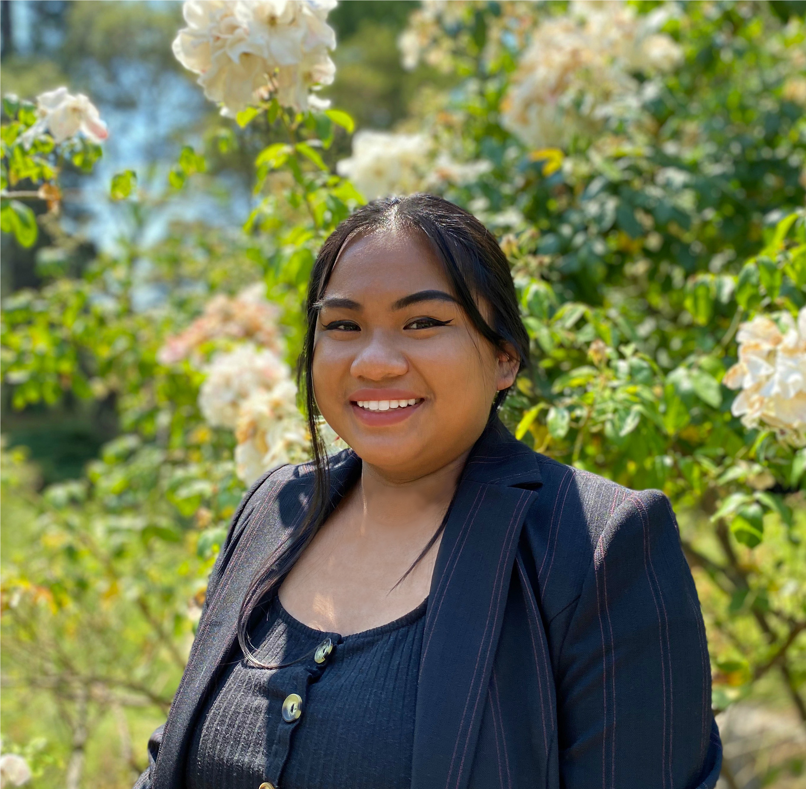
Chemistry, 2022
she/her/hers
Hi, I’m Audrey, PASAE’s Wellness Coordinator. I work to promote the physical and mental wellness of members of PASAE by facilitating wellness workshops, conducting member check-ins, and planning fun activities with the Social Chair. I strive to foster a welcoming, inclusive community by being a part of your support system.
I am from San Diego and I am a Chemistry major, recently switched from Chemical Engineering, so if you need help navigating the College of Chemistry, let me know. Outside of PASAE, I like trying new places to eat, spending too much time on Netflix, and making bad jokes. Feel free to reach out to me if you need support, want to grab some boba, or want to be friends uwu.
Monique Cosiquien
Treasurer
Environmental Economics & Data Science, 2023
she/her/hers
Hi, I am Nikki and I’m PASAE’s Treasurer. As treasurer, I oversee finances, like cash reimbursements, budgeting, and fundraisers.
I come from Manila and I like making filipino desserts such as suman, espasol and the likes. Food is my passion and I enjoy trying exotic dishes, hunting for the latest food trends, and watching mukbangs. To balance out my appetite, I do my best to stay active in the gym and occasionally play basketball. I also like to meet new people so don’t be afraid to reach out! I won’t bite.
Fun Fact: LinkedIn is my Tinder (jk) but seriously let's connect
Conner Manuel
Webmaster
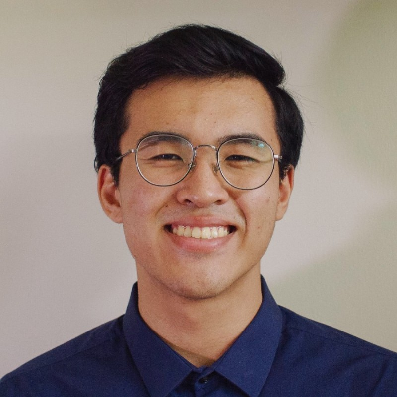
Computer Science and Applied Mathematics, 2023
he/him/his
Hi! I’m Conner, this year’s Webmaster. I’m in charge of overseeing and maintaining the PASAE website (yes, this one), adding new features, and managing online resources for PASAE’s interns. If you have any feedback or suggestions for online programming on the website, you can let me know here! I hope to use the website as a platform of connection especially in the midst of the pandemic, especially since I’ll be working from the Philippines.
Outside of PASAE, I do some volunteer work in Data Analytics for the Philippine Red Cross Tech Response Team, and I currently serve as a design head for the ASUC Office of the Chief Communication Officer. I’m really into data and design, animated shows, hitting the gym, OPM (hmu for suggestions), excessive hand gestures, the occasional video game, and cooking!
Travis Reyes
External Vice President
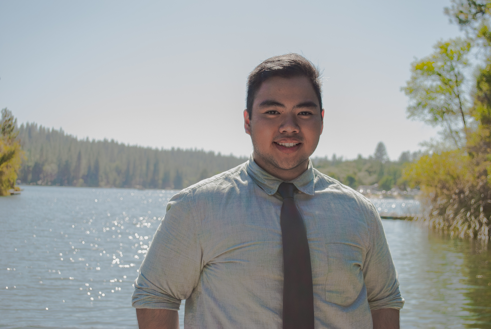
Computer Science & Data Science, 2022
he/him/his
As this year's External Vice President, I organize the majority of PASAE's external events, maintain partnerships with companies around the country, and overlook PASAE's alumni network. My mission is to help foster our members' skills and abilities in order to be successful in the professional world and support them in landing their dream jobs and internships! One day, I aspire to become a software engineer dealing with Machine Learning and Artificial Intelligence.
Outside of PASAE: I was a tutor for CS61B over summer 2020, play various sports (basketball, tennis, football, soccer, and volleyball), play a lot of MOBA, RTS, and FPS video games, watch random movies, and love to go out on late-night adventures!
Avery Perez
Computer Science Representative
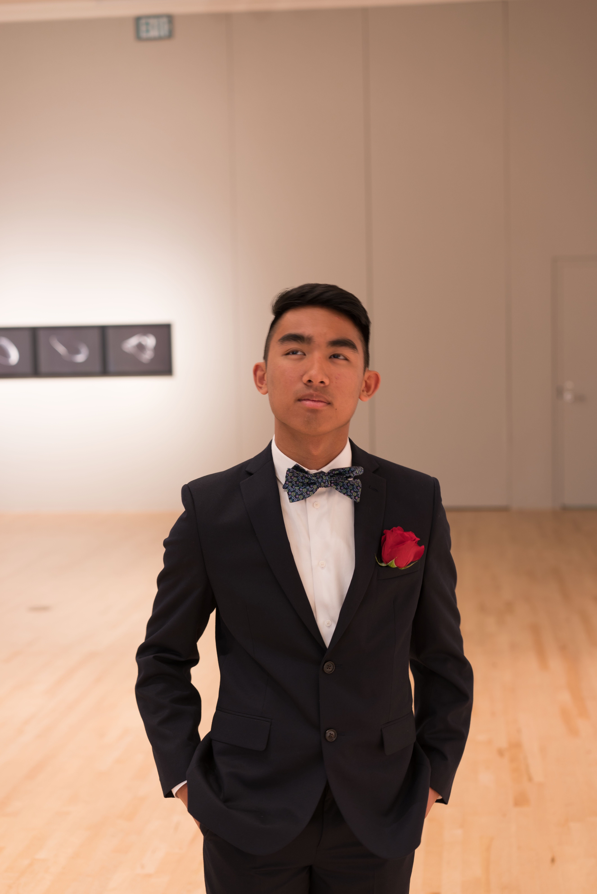
Electrical Engineering & Computer Science, 2023
he/him/his
What's up guys, my name is Avery Perez, and I'm the computer science representative for PASAE this year. I'm a second-year EECS major from Union City, CA. My main role is to help organize FASTERCON, a national web conference for Filipino-Americans in Silicon Valley Tech. I'm also the main academic resource for students in computer/data science, so hmu anytime if you need help with any of the intro CS courses! Outside of PASAE, I play percussion in the University Wind Ensemble, after doing 4 years of marching band @ James Logan HS. I also have a big passion for kpop/dance, so catch me performing at an AFX showcase once the pandemic ends! My other main interests include sports (huge Giants/Warriors/49ers fan) and playing video games(add me on Steam, LoL & lichess: Aj11240).
Anatori Prieto
Life Sciences Representative
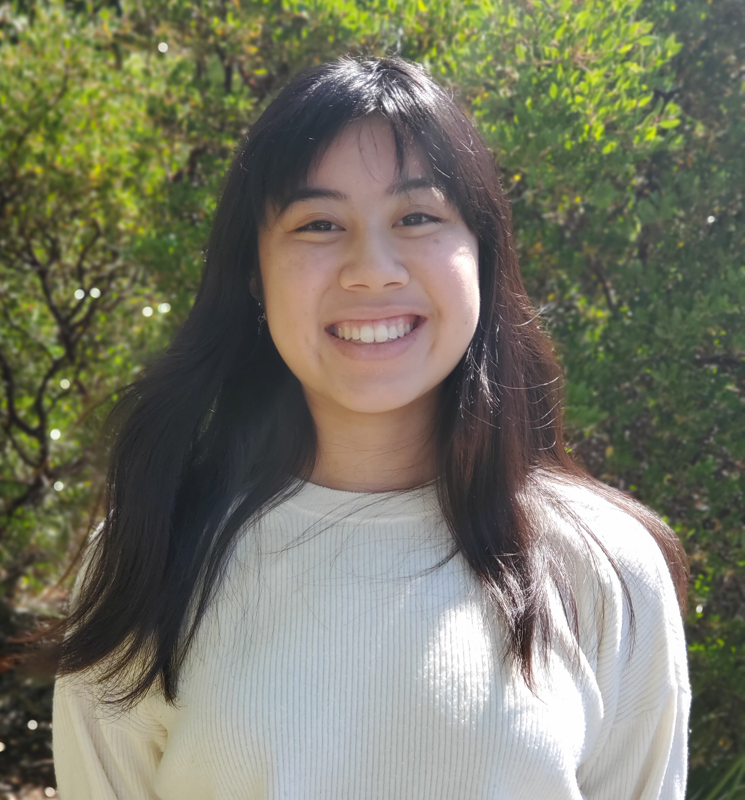
Bioengineering, 2022
she/her/hers, they/them/theirs
Hi I'm the Life Sciences Representative, Anatori (she/they pronouns)! I help host events like BASF and the Gilead Panel. I'm a Bioengineering major and a lab assistant so hit me up for class and research advice. Outside of PASAE I also work with some political organizing groups and make art!
Fun fact: over quarantine I bleached & dyed my hair blue !!
Angelo Braganza
Engineering Representative

Mechanical Engineering, Minor in IEOR/Data Science, 2023
he/him/his
Hi, my name is Angelo and I’m excited to be this year’s engineering representative! My primary role is to serve as an academic liaison for students majoring, minoring, or taking courses within UC Berkeley’s College of Engineering. I am here to assist students break into the engineering industry by providing academic and career guidance. Likewise, I help the rest of External establish and maintain relationships with various companies and professionals. Furthermore, I help organize our engineering-related outreach events.
Aside from PASAE, I am an active member of UC Berkeley’s Solar-Powered Vehicle Team, CalSol, where we are currently building our tenth-generation solar car! In my spare time, I love to swim, travel, try various foods, and dabble in nature and cityscape photography. Professionally, I want to pursue an MBA and work in product research and development. Feel free to reach out to me to discuss the growing tech industry, hit up one of Berkeley’s late-night food joints, or just to connect and talk at 1AM!
When I'm not chilling on campus, I love drawing digitally, getting wrecked on Smash Ult and Overwatch, and am currently dedicating my life to Fire Emblem Three Houses. I'm an aspiring powerlifter and I take kickboxing classes once in a blue moon!
Fun Fact: I won a pet goldfish at McDonald’s.
Alejandra Ongpin
CED Representative
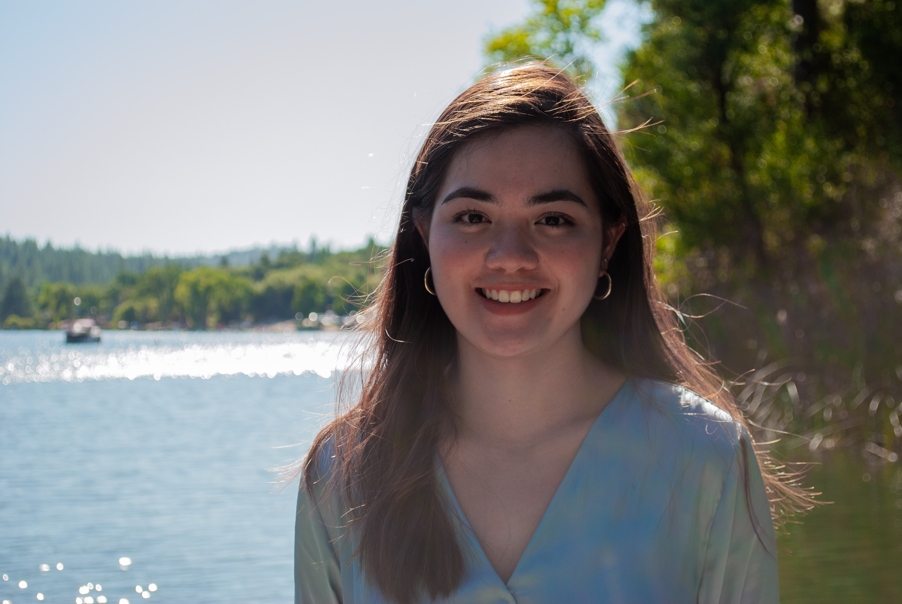
Sustainable Environmental Design, 2022
she/her/hers
I am Ali Ongpin, PASAE's Environmental Design Representative. I am the liaison for students and the College of Environmental Design and provide resources and plan activities for students interested in architecture and the allied arts. In addition to this, I plan events and activities with our parent organization FASAE (Filipino American Society of Architects and Engineers). Outside of PASAE, I enjoy learning about sustainability, exploring new places, trying new recipes, playing soccer, and collecting cute stationary.
Annissa Deguzman
Creative Director
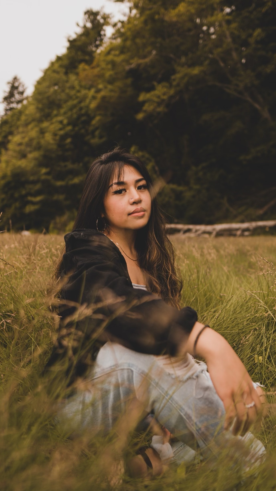
Landscape Architecture, Minor in City & Regional Planning, 2022
she/her/hers
Hey! I’m Annissa (pronounced uh-knee-sah) and I am PASAE Core 33’s Creative Director. I manage the Creative Component, so I oversee and delegate responsibilities of the Historians, Social Chair, and Public Relations officer. As Creative Director, I spearhead projects ranging from creating media graphics/flyers to designing PASAE apparel and much more!
As a design major, I seek to collaborate with individuals also passionate in environmental design, sustainability, and advocating for marginalized communities facing sociopolitical challenges today. In my free time, I love to dance (psst, join Cal Hawai’i Club HAHA), sing, learn about everything I don’t know (culturally, academically, professionally, etc.), and share music :p
If you have any music recs (rnb, indie/alternative, anything really) send them my way!
Manny Fuentes
Co-Historian
Computer Science, 2023
he/him/his
Wilson La
Co-Historian
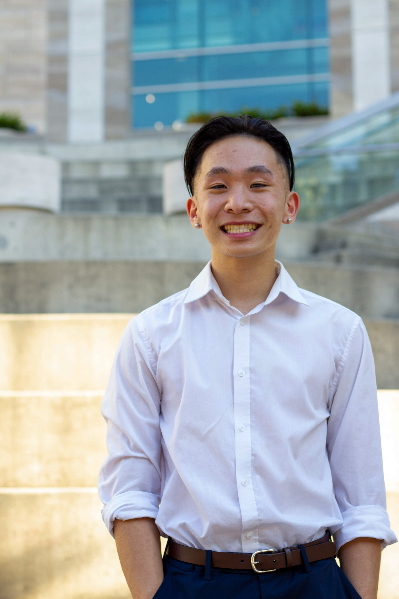
Data Science & Sociology, 2022
he/him/his
Hey! I’m Wilson, and I’m one of PASAE’s co-historians for the 2020-2021 school year. As a part of the creative component, my role is to keep a record of our organization and support my fellow core members. In a normal school year, I’d be helping PASAE with headshots and taking pictures at our events, but because everything is remote this semester, things will be a little different. With shelter-in-place going on and no in-person events, I’m still figuring out my new role, but I’m excited to try new things for PASAE this year!
Now for a little about myself.
I was born and raised in Daly City and I’ve lived my entire life in the SF Bay Area. I am a third year undergraduate student majoring in Sociology and Data Science, and I am passionate about making technology more accessible! My time at Berkeley so far can be summarized with long nights in Eshleman Hall, Boba Ninja’s popcorn chicken, and long, tiring uphill walks from southside to Soda. When I don’t feel like studying, I am usually sleeping or trying out new hobbies. Lately, my free time during quarantine has been occupied by Valorant, photography, and catching up with people who I haven’t been in touch with. I’m always down to meet new people, so if you’re interested in PASAE or want to talk, feel free to reach out!
Fun fact: I once got three boba drinks in one day. :)
Josh Bautista
Public Relations Officer
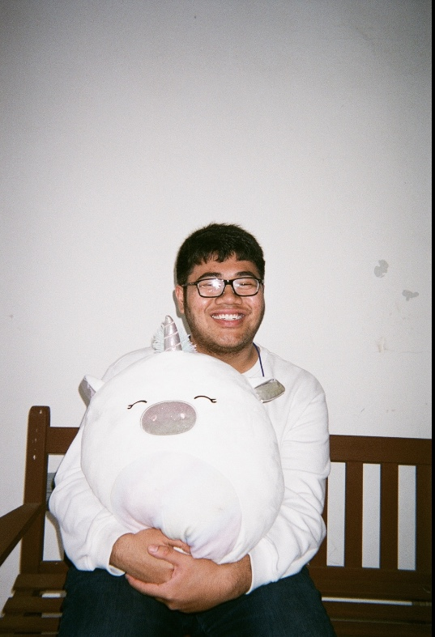
Data Science & Economics, 2023
he/him/his
hello! my name is josh and i'm the public relations officer for PASAE this year and i pretty much design all the media that we put out and run our social media accounts. outside of pasae, you can find me outside with either a camera, basketball, or journal :)
Gabby Africa
Social Chair
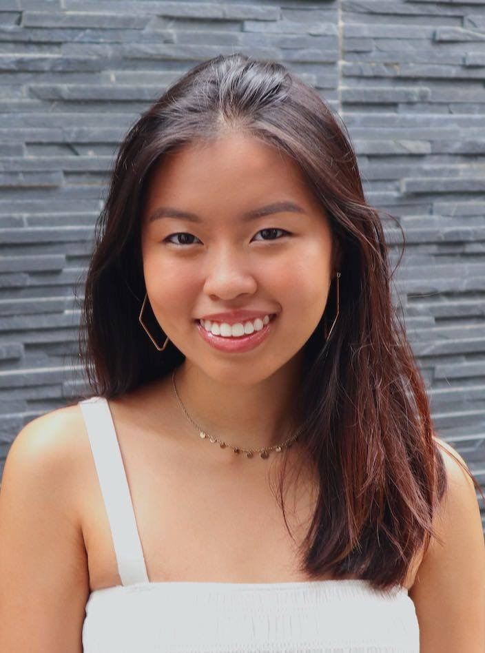
Data Science & Economics, 2023
she/her/hers
Hi! I’m Gabby and I’m this years Social Chair. As social chair, I help grow a more connected community through different inclusive and interactive events. These events are open to anyone who want to have fun with like - minded people or just simply to form new meaningful friendships.
I come from Manila, Philippines but have also lived in Singapore, Malaysia and Thailand before moving to Cal. Outside of Pasae, I’m also part of the Data Science Society and the Cal Swimming Club. When I’m looking for a way to procrastinate, I enjoy trying new restaurants with friends, so if you know any goods places lmk!
Past Core Members
Core 32
2019 - 2020
Core 31
2018 - 2019
Core 30
2017 - 2018
Core 29
2016 - 2017
Core 28
2015 - 2016
Core 27
2014 - 2015
Core 32
2019 - 2020
Executive Component
President: AJ Sales
Internal Component
Co-Internal Vice President: Kathryn Balingit
Co-Internal Vice President: Mikhaela Martin
Secretary: Patty Natividad
Social Chair: AJ Magsarili
Treasurer: Psalm Masaya
External Component
Co-External Vice President: Geraldine Fabro
Co-External Vice President: Isabella De Leon
Engineering Representative: Andrew James Ortega
CED Representative: Alejandra Ongpin
Life Science Representative: Erika Pasia
Computer Science Representative: Travis Reyes
Creative Component
Creative Director: Rigel Sison
Director of Tech and Resources: Seth Dumaguin
Historian: Keziah Aurin
Core 31
2018 - 2019
Internal Component
Internal Vice President: Dani Carino
Secretary: Kathryn Balingit
Co-Social Chair: Justine Robin Puerto
Co-Social Chair: Patty Natividad
Treasurer: Mikee Martin
External Component
Co-External Vice President: Kendal Asprec
Co-External Vice President: Rafael Calleja
Life Science Representative: AJ Sales
Computer Science Representative: Isabella De Leon
Engineering Representative: Geraldine Fabro
Environmental Design Representative: Audrey Yue
Creative Component
Creative Director:Sheena Gonzalez
Historian: Jo Apellanes
Webmaster: Seth Dumaguin
Public Relations: Rigel Sison
Core 30
2017 - 2018
Executive Component
President: Radley Rigonan
Internal Component
Internal Vice President: Jilian Cabornay
Secretary: Dani Carino
Social Chair: Joshua Paul Santiago
Treasurer: Radley Rigonan
External Component
External Vice President: Joshua Caleb Dy
Science Representative (Events): Kendal Asprec
Science Representative (FASTER): Jay Mantuhac
Engineering Representative: Rafael Calleja
Creative Component
Historian: Lance Moll
Webmaster: Rafael Calleja
Public Relations: Sheena Gonzalez
Core 29
2016 - 2017
Executive Component
President: Nizelle Fajardo
Internal Component
Internal Vice President: Radley Rigonan
Secretary: Jillian Carbonay
Social Chair: Adriane Ocampo
Treasurer: Adriane Ocampo
External Component
External Vice President: Melody Valdez
Science Representative: Christian Ramiro
Engineering Representative: Joann Atienza
Creative Component
Creative Director: Matthew Lee
Co-Historian: Kisha Tarog
Co-Historian: Katy Alavilla
Webmaster: Franky Guerrero
Core 28
2015 - 2016
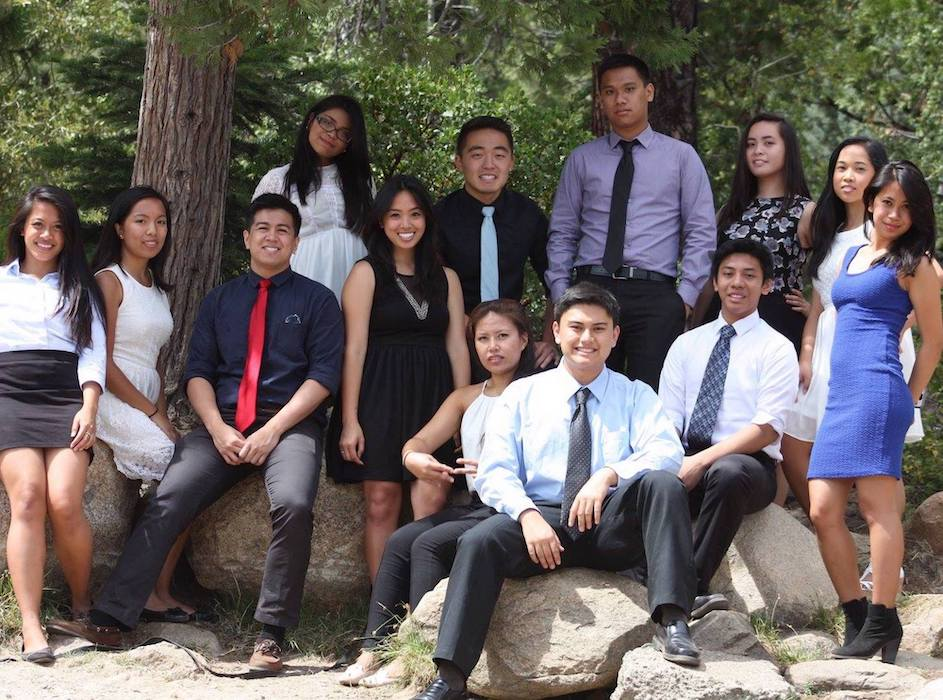Executive Component
President: Jerrold Acdan
Internal Component
Internal Vice President: Corrina Calanoc
Secretary: Radley Rigonan
Co-Social Chair: Matthew Lee
Co-Social Chair: Rachelle Rosano
Treasurer: Anthony Achacoso
External Component
External Vice President: Xavier Redondo
Science Representative: Gabrielle Judilla
Environmental Design Representative: Joan Campos
Creative Component
Creative Director: Marvin Yan
Historian: Nizelle Fajardo
Webmaster: Melody Valdez
Public Relations: Mymy Guiang
Core 27
2014 - 2015
Executive Component
President: Wilzen Bassig
Internal Component
Co-Internal Vice President: Michael Fuerte
Co-Internal Vice President: Melissa Galinato
Secretary: Jennifer Nguyen
Social Chair: Ian Custudio
Treasurer: Mark Siy
External Component
External Vice President: Diana Duong
Science Representative: Jerrold Acdan
Engineering Representative: Xavier Redondo
Environmental Design Representative: Joan Tionko
Creative Component
Creative Director: Cyrus Batino
Historian: Marvin Yan
Webmaster: Royce Puzon
Public Relations: Jon Ebueng